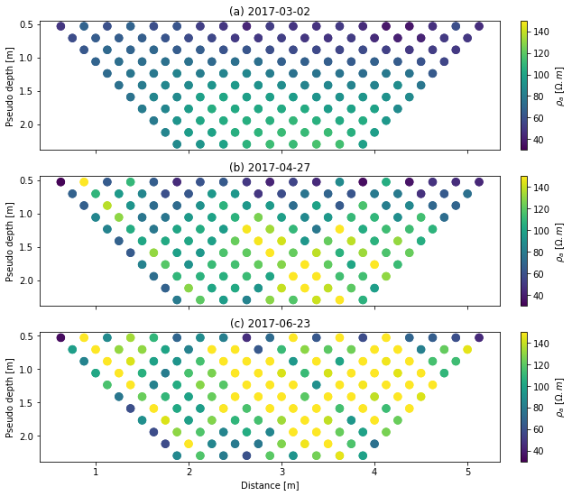
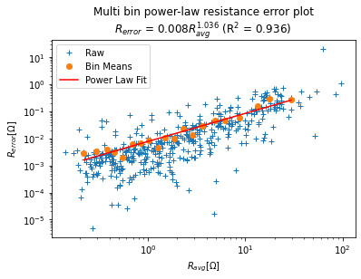
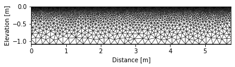
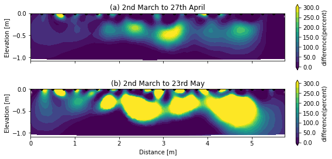

Monitoring of soil drying under winter wheat¶
(updated on 2020-12-03)
Author: Guillaume Blanchy g.blanchy@lancaster.ac.uk ✉️
Reviewer: Benjamin Mary benjamin.mary@unipd.it ✉️
Context¶
To ensure our food security while This notebook shows how time-lapse electrical resistivity tomography (ERT) can help to follow the soil drying (mainly driven by root water uptake) during the growth season. Geophysical tools has proven useful to monitor water movement in the subsurface (Binley et al., 2015). From an agronomical point of view, imaging the depth and extent of water drying by the roots is a relevant traits for crop breeders to select new variety. Indeed, we can expect that a crop able to take water deeper will be more resistant to drought. Using time-lapse geophysics (ERT and FDEM), (Shanahan et al., 2015) were able to image differences between a few winter wheat varieties.(Whalley et al., 2017) further expanded to larger number of varieties used and compared the geophysical methods with other more traditional approaches (neutron probe, penetrometer). However, field heterogeneity can, under some circumstances, hinder the power of geophysics to rank the varieties. This was investigated by (Blanchy et al., 2020a). The data presented in this notebook have been collected during this study.
Materials and Methods¶
This dataset was collected on 24 pins array (0.25 m electrode spacing) using a dipole-dipole sequence with a Syscal Pro 48 (Iris Instruments, Orléans, France). The experiment took place at Worburn (UK), a research station managed by Rothamsted Research in 2017 under winter wheat (Blanchy et al., 2020a).
Photo of one plot in February 2017.
The processing of the ERT data was done using ResIPy Python API (Blanchy et al., 2020b) that is based upon R* codes (Binley, 2005).
import matplotlib.pyplot as plt
from resipy import R2
datadir = '../data/blanchy/dc-2d-timelapse/data/'
API path = /home/runner/.local/lib/python3.8/site-packages/resipy
ResIPy version = 3.2.3
cR2.exe not found, will download it...done
R3t.exe not found, will download it...done
cR3t.exe not found, will download it...done
k = R2(typ='R2') # initiate a Project instance for 2D DC survey (using R2 code)
k.createTimeLapseSurvey([datadir + '17030207.csv',
datadir + '17042705.csv',
datadir + '17062304.csv'], ftype='Syscal')
k.filterUnpaired() # remove dummy quadrupoles added to make dipole-dipole faster
Working directory is: /home/runner/.local/lib/python3.8/site-packages/resipy
3/3 imported
removeUnpaired:removeUnpaired:removeUnpaired:
108
fig, axs = plt.subplots(3, 1, figsize=(10, 9), sharex=True)
ax = axs[0]
k.showPseudo(index=0, ax=ax, vmin=30, vmax=150)
ax.set_title('(a) 2017-03-02')
ax.set_xlabel('')
ax = axs[1]
k.showPseudo(index=1, ax=ax, vmin=30, vmax=150)
ax.set_title('(b) 2017-04-27')
ax.set_xlabel('')
ax = axs[2]
k.showPseudo(index=2, ax=ax, vmin=30, vmax=150)
ax.set_title('(c) 2017-06-23')
Text(0.5, 1.0, '(c) 2017-06-23')

Error modelling¶
Inside the inversion routine, each measurement is given a weight related
to the error of the measurement. As the sequence used contains both
‘normal’ and ‘reciprocal’ quadrupoles, we can compute a reciprocal error
as: $ R_{error} = |R_{normal} - R_{reciprocal}| $. Using the mean
resistance measured as: $ R_{avg} =
:raw-latex:`\frac{|R_{normal} + R_{reciprocal}|}{2}`$ we can fit a
power-law error model of the type :math:`R_{error} = a * R_{avg}^b`.
This model is fitted in a logarithmic space (a power-law fit looks like
a linear fit in log space). To make the fit (red line) more robust,
measurements (blue plus) are grouped bins of which the mean is computed
(orange dots). This This is implemented in the method fitErrorPwl()
where the index=-2 argument specifies that the model will be done on
the combined data of all surveys.
k.fitErrorPwl(index=-2) # fit a power-law error model for all dataset aggregated
Error model is R_err = 0.008 R_avg^1.036 (R^2 = 0.936)

k.createMesh(typ='trian', cl=0.01, cl_factor=20, show_output=False) # create a triangular mesh with a characteristic length of 0.5
k.showMesh() # display the mesh
Creating triangular mesh...Reading mesh.msh
Gmsh version == 3.x
reading node coordinates...
Determining element type...Triangle
Reading connection matrix...
ignoring 0 elements in the mesh file, as they are not required for R2/R3t
Finished reading .msh file
Done
ResIPy Estimated RAM usage = 0.021371 Gb
done

k.err = False
k.invert(parallel=True) # run the inversion (and write R2.in and protocol.dat automatically)
Writing .in file and protocol.dat... Matching quadrupoles between surveys for difference inversion...308 in common...done in 0.012035s
done!
------------ INVERTING REFERENCE SURVEY ---------------
>> R 2 R e s i s t i v i t y I n v e r s i o n v4.02 <<
>> D a t e : 10 - 05 - 2021
>> My beautiful survey
>> I n v e r s e S o l u t i o n S e l e c t e d <<
>> Determining storage needed for finite element conductance matrix
>> Generating index array for finite element conductance matrix
>> Reading start resistivity from res0.dat
>> R e g u l a r i s e d T y p e <<
>> L i n e a r F i l t e r <<
>> L o g - D a t a I n v e r s i o n <<
>> N o r m a l R e g u l a r i s a t i o n <<
>> D a t a w e i g h t s w i l l b e m o d i f i e d <<
Processing dataset 1
Measurements read: 154 Measurements rejected: 0
Geometric mean of apparent resistivities: 0.74009E+02
>> Total Memory required is: 0.858 Gb
Iteration 1
Initial RMS Misfit: 20.17 Number of data ignored: 0
Alpha: 6.022 RMS Misfit: 2.83 Roughness: 13.453
Alpha: 2.795 RMS Misfit: 3.12 Roughness: 16.097
Step length set to 1.00000
Final RMS Misfit: 2.83
Updated data weights
Iteration 2
Initial RMS Misfit: 2.37 Number of data ignored: 0
Alpha: 3.506 RMS Misfit: 0.45 Roughness: 22.157
Step length set to 1.00000
Final RMS Misfit: 0.45
Final RMS Misfit: 1.01
Solution converged - Outputing results to file
Calculating sensitivity map
Processing dataset 2
End of data: Terminating
--------------------- MAIN INVERSION ------------------
________________System-Check__________________
Kernel type: Linux
Processor info: x86_64
2 Threads at <= 2294.7 Mhz
Total memory = 6.8 Gb (usage = 14.7)
Wine version = 5.0
2/2 inversions completed
----------- END OF INVERSION IN // ----------
3/3 results parsed (3 ok; 0 failed)
Results¶
By comparing the relative difference in resistivity (\(\frac{\Delta \rho}{\rho_{March}}\) in %) between (a) March-April and (b) March-May. We can observe larger and deeper soil increase of resistivity associated with larger soil drying from plants water uptake.
fig, axs = plt.subplots(2, 1, figsize=(8, 4), sharex=True)
ax = axs[0]
ax.set_title('(a) 2nd March to 27th April')
k.showResults(ax=ax, index=1, attr='difference(percent)', vmin=0, vmax=300, contour=True)
ax.set_xlabel(None)
ax = axs[1]
ax.set_title('(b) 2nd March to 23rd May')
k.showResults(ax=ax, index=2, attr='difference(percent)', vmin=0, vmax=300, contour=True)
fig.tight_layout()

Download python script: blanchy_wheat-rwu-ert-timelapse.py
Download Jupyter notebook: blanchy_wheat-rwu-ert-timelapse.ipynb
View the notebook in the Jupyter nbviewer
Run this example interactively: